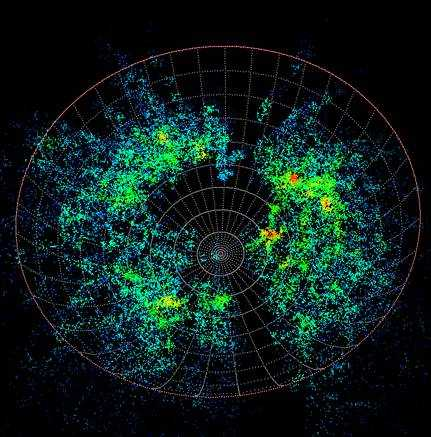
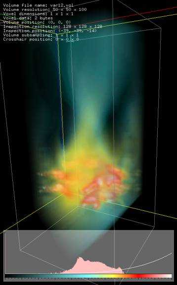
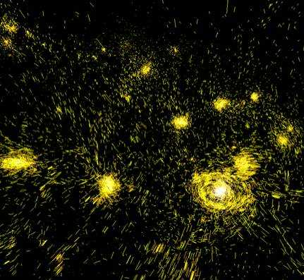

Scientific Visualisation and Mac OS-X
Written by Paul Bourke
August 2004
[ UNIX Ties Make Mac OS X a Visualisation Powerhouse ]
Original PDF file,
Second PDF file
Scientific
visualisation primarily involves presenting datasets in such a way as to
provide additional insight into the underlying science. Aspects of data can be
mapped onto any of the human senses but the main sense is usually our visual
system and includes the powerful depth perception we experience through
stereopsis.
Software that
supports visualization has some unique requirements as well as a number of
highly desirable characteristics. The Centre for Astrophysics and
Supercomputing at Swinburne University of Technology is successfully utilising
Apple hardware and the Mac OS-X operating system to meet its visualization requirements.
An important
aspect of scientific computing in general is the sharing of source code written
by collaborators and other researchers. There is the expectation that this
source code can be compiled on the particular computer system owned by the research
institution irrespective of where it was written. There are specific tools and
conventions that support this activity on a UNIX platform, this is
significantly more difficult between MicroSoft Windows platforms and the Apple
Macintosh before OS-X. This is even more difficult for applications that use
media rich information such as audio and rely on graphical user interfaces.
This is alleviated on most UNIX platforms by a large collection of cross
platform libraries and because of a windowing environment known as X-Windows
which is uniformly supported on UNIX based systems including Mac OS-X.
Visualisation
applications generally deal with large volumes of multidimensional data. Real
time performance (at least 25 frames per second) is critical to being able to
effectively interact with these datasets. This generally requires hardware
assisted 3D graphics in the form of OpenGL compliant graphics cards. The
standard support across the whole Macintosh range for OpenGL graphics including
uniform driver support further ensures that such applications have a better
chance of performing adequately across the various vendor hardware options.
Most high
performance computing resources, whether based upon clusters or not, are
running the UNIX operating system. There are significant advantages for
researchers to also be using UNIX as their desktop operating system. The Centre
manages a large cluster of Linux based machines and staff within the Centre
have a mixture of either Linux or Mac OS-X desktop computers. All of the
visualization tools the Centre has developed locally can be compiled for both
platforms, a significant efficiency given the time consuming nature of software
development.
Many
visualisation problems can benefit from stereoscopic projection, that is, the
independent presentation of images from a left and right eye perspective to the
corresponding human eye. This gives a strong sense of depth that assists in the
understanding of 3 dimensional relationships in a way that cannot be obtained
with a single perspective view. The Centre has a long history in using
stereoscopic techniques and the vast majority of the visualization software
developed locally can operate in that mode on any Macintosh equipped with a
dual display graphics card. These applications can be employed to explore data
in stereo3D in our stereoscopic enabled lecture theatre driven by a high end G5
tower. The same applications run on the midrange machines staff may have on
their desktop and on laptops when researchers are presenting their work
externally.
The suitability
of the Apple Macintosh running the OS-X operating system as a platform on which
to conduct scientific research is seeing it become the platform of choice in
many science disciplines, this includes its use for visualisation. This is in
addition to the other advantages such as providing a single solution for
commercial applications as well as research based software. With regard to
visualization applications there are still some challenges for Apple, in
particular, support for more powerful graphics cards. The current highest end
support is for the Radeon cards which are in the middle of the performance
range. There are additionally some unexpected differences between the X11 and
OpenGL implementations on Mac OS-X compared to other UNIX platforms. It is
expected the suitability of the Mac OS-X platform for visualization and
scientific research will improve as Apple continues to pursue the high
performance market in the future.
|

Figure 1: A
general purpose stereoscopic 3D enabled geometry viewer. Visualisation of
galaxy positions in the 6dF survey. [Anglo-Australian Observatory]
|
|

Figure 2:
Hardware assisted interactive volume rendering. Visualisation of nitrous oxide
in a coal burning powerstation furnace. [Dr Jamal Naser, Swinburne University]
|
|

Figure 3: Real
time visualization of dynamic systems with large volumes of geometry. Mass
trajectories in a galaxy formation simulation. [Dr Chris Brook, Swinburne
University]
|
|